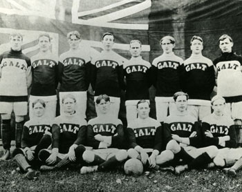
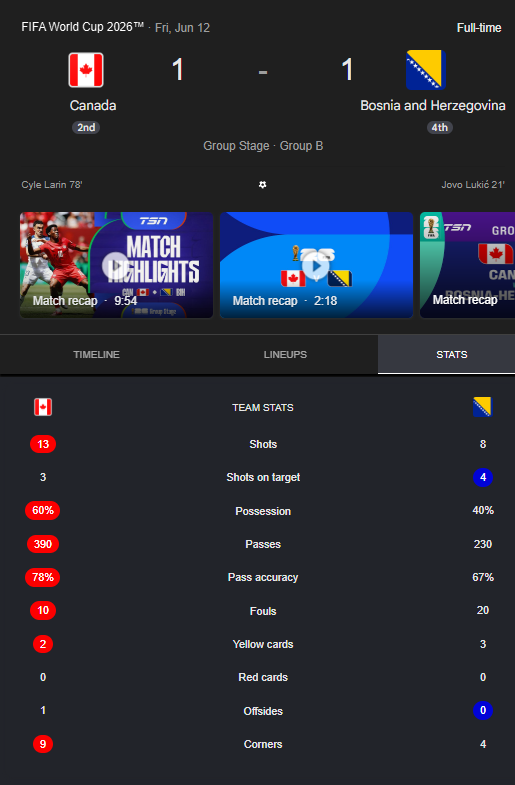

In the latter decades of the nineteenth century and the opening years of the twentieth, the Dominion of Canada witnessed a most remarkable transformation in the character of its public leisure. Sports once confined to informal pastures and frozen ponds were codified, organized, and elevated to the status of national institutions. From Dr. James Naismith's invention of basketball, to the creation of the Stanley Cup and the rise of organized soccer, Canadians helped shape a sporting culture that continues to thrive today.
The primary sources consulted, club minutebooks, newspaper accounts, personal published memoirs, and official correspondence , provide an unusually direct window into the era. Lord Stanley's letter of intent, the by-laws of the Ottawa Bicycle Club, and the original thirteen rules published in The Triangle all survive to speak plainly across the years. Each milestone below may be expanded to reveal its source record.
Basketball
Association Football
Naismith's Invention:
Peach Baskets & Thirteen Rules
A Canadian physician training in Massachusetts devised the game in a single afternoon. Within three years, his countrymen had carried it home across the border through the YMCA network.
Association Football
Takes Root
From the formation of British Columbia's governing body in 1891 to Galt F.C.'s Olympic gold and the founding of a national association, organized soccer in Canada came of age within a single generation.
Then vs. Now
Each past milestone is set against its modern counterpart , expand either card to read the full source record.
Cause and Consequence
Using the historical thinking concept of Cause and Consequence to understand how sports developed in Canada between 1890 and 1916 and how those developments continue to influence sports today.
What Specifically Triggered This Development?
During the late 1800s and early 1900s, Canada's growing cities, schools, YMCA programs, and community clubs created a demand for organized recreation. These social changes encouraged the creation and spread of sports such as basketball and soccer.
How Did This Influence Later Events?
Organized leagues, official rules, and national competitions helped sports expand across Canada. Basketball spread from James Naismith's invention into schools and communities, while soccer developed from local clubs into national and international competitions.
Are The Consequences Still Evident Today?
Yes. Modern professional leagues, international tournaments, and Canada's participation in events such as the NBA and FIFA World Cup all trace their roots back to the growth of organized sports during this period. Sports remain an important part of Canadian culture and identity.
Description
Canadian Dr. James Naismith, a graduate of McGill University, invented the game to provide a safe indoor activity for his students during the winter months. The original game used 13 basic rules, a soccer ball, and two peach baskets , with no dribbling allowed. The ball could only be moved via passing, and matches were typically played 9-versus-9.
Primary Source
James Naismith, a 31-year-old graduate student from Canada, invented the game at Springfield College under Luther Halsey Gulick. The rules were first published in the school newspaper, The Triangle, on January 15, 1892.

Description
Basketball has grown from a small indoor game into one of the world's most popular sports, played by over 300 million people. Modern rules allow complex dribbling and the game is played 5-versus-5. The Toronto Raptors represent Canada in the NBA, inspiring new generations of players across the country.
Primary Source
Highlights from the Toronto Raptors' 114–102 playoff loss to the Cleveland Cavaliers on May 3, 2026, demonstrating the popularity and high level of modern professional basketball in Canada.
Key Change
From 9-versus-9 with no dribbling in a Springfield gymnasium to a 300-million-player global sport with Canadian professional franchises competing at the highest level , Naismith's 13 rules became the foundation of a worldwide institution.
Description
Representing Canada at the 1904 St. Louis Olympic Games, Galt F.C. of Ontario defeated two American teams to win Canada's first Olympic soccer gold medal, establishing Galt as the "football capital" of Canada. Early Canadian soccer was fragmented, with "Canadian Rules" permitting hacking and jumping on opponents' backs , far rougher than British rules.
Primary Source
Contemporary newspaper accounts from the Toronto Mail and Empire dated November 18, 1904, reporting on the victory and medal ceremony at the office of James W. Sullivan, chief of the Department of Physical Culture.

Description
Canada co-hosts the 2026 FIFA World Cup alongside the United States and Mexico. The national team drew 1–1 with Bosnia and Herzegovina, scoring first in the 23rd minute. Soccer is now Canada's top participation sport with nearly one million registered players , overtaking ice hockey among youth and children.
Primary Source
Match statistics from the FIFA 2026 World Cup group stage, held at BMO Field in Toronto. The result demonstrates Canada's role as both host and competitive participant in the world's most watched sporting event.

Key Change
From a fragmented sport with rough regional rules and a single Olympic gold to co-hosting the FIFA World Cup with nearly one million registered players , Canada has transformed from an early pioneer into a fully established soccer nation on the world stage.